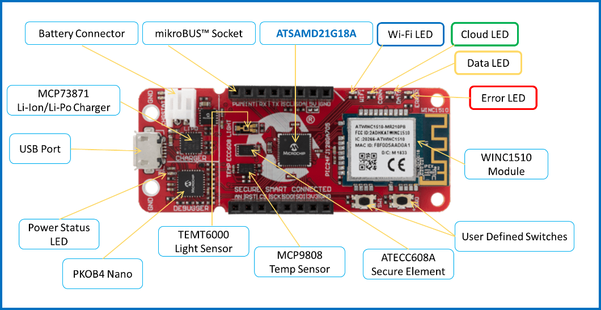

Google IoT Application Demo on SAM D21 IoT Development Board
Description
TBD
Modules/Technology Used:
Hardware Used:
Setup:

Programming binary/hex file:
- If you are not interested in installing development tools. The pre-built binary/hex file can be programmed to the target.
Steps to program the hex file using MPLAB X IPE.
- Open MPLAB X IPE.
- Select Device has "ATSAMD21G17D".
- Power the SAM D21 IoT Development Boardt from a Host PC through a Type-A male to Micro-B USB cable connected to Micro-B port (J105).
- Once Power cable is connected, "PKOB nano" hardware tool is identified as a programmer.
- Browse to hex file (getting_started_hex_file.hex).
- Click on program button. The device gets programmed in sometime.
- Follow the steps in "Running the Demo" section below.
Programming/Debugging Application Project:
- Open the project (getting_started\firmware\sam_d21_cnano.X) in MPLAB X IDE.
- Ensure "PKOB nano" is selected as hardware tool to program/debug the application.
- Build the code and program the device by clicking on the "make and program" button in MPLAB X IDE tool bar.
- Follow the steps in "Running the Demo" section below.
Running the Demo:
Revision:
- v1.0 released "Google IoT Application Demo on SAMD21 IoT Development Board".